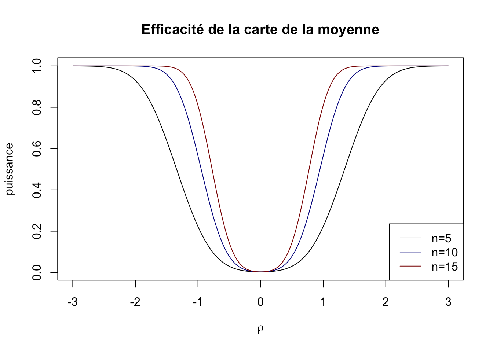
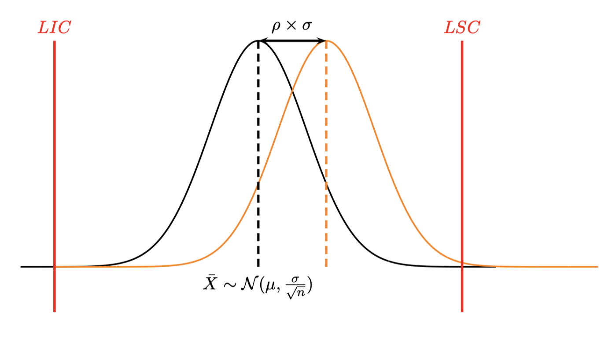
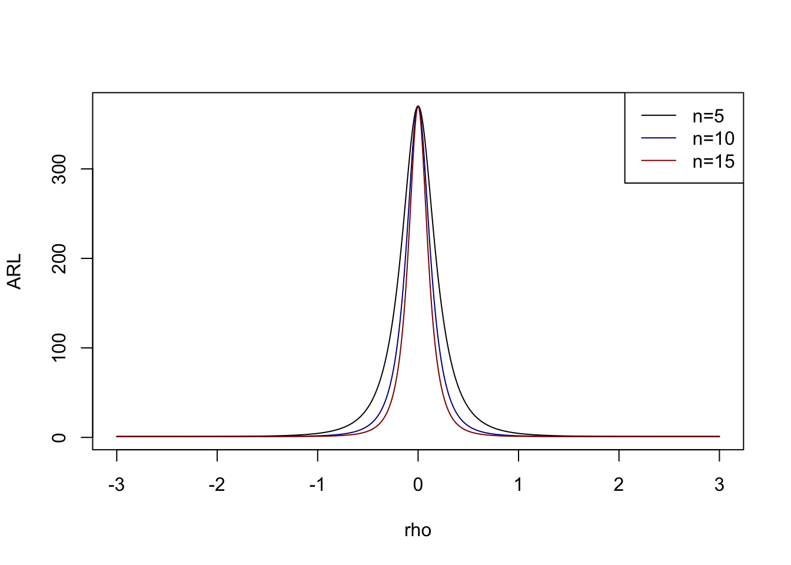
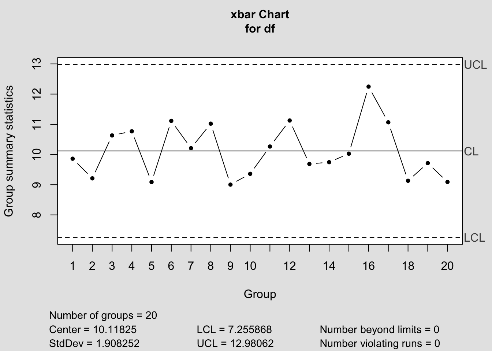
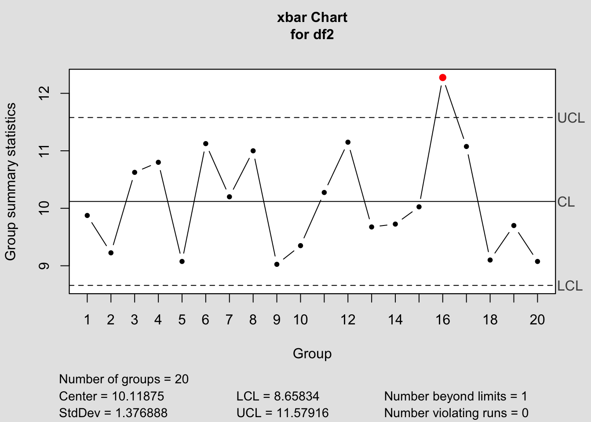
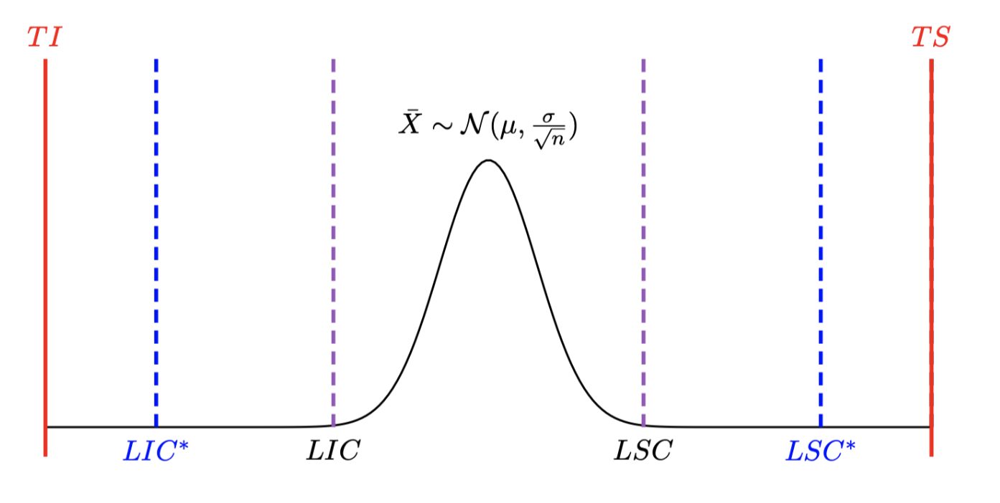

5 Efficacité des cartes de Shewhart
La notion d’efficacité d’une carte de contrôle est sa capacité à détecter un dérèglement alors que la production semble rester sous contrôle.
Le dérèglement peut concerner un décentrage (dérèglement de la moyenne) ou bien une augmentation de la dispersion.
5.1 Déréglage de la moyenne
 Un décentrage de moyenne est exprimé en nombre d’écart type (unité standardisé) donc si \(\mu_1\) est la moyenne décentrée, on lui associera le décentrage
\[ \rho=\frac{|\mu_1-\mu|}{\sigma} \]
La probabilité \(\beta\) de ne pas détecter le décentrage est alors
\[ \beta=\mathbb P(LIC<\widetilde X <LSC) \]
où \(\widetilde X \sim \mathcal N(\mu+\rho\sigma,\frac{\sigma}{\sqrt{n}}).\) Un calcul simple permet d’obtenir
\[ \beta = F(3-\rho\sqrt n)-F(-3-\rho\sqrt n) \]
où \(F(x)=\mathbb P(X<x)\) est la fonction de répartition de la loi normale.
L’efficacité de la carte est mesurée par \(1-\beta\) (appelée puissance de la carte).
On obtient ainsi les courbes d’efficacité de la carte de la moyenne en fonction de la taille \(n\) des échantillons prélevés.
On constate (ce qui est logique) que la probabilité de ne pas détecter un déréglage donné diminue en fonction de la taille de l’échantillon.
Détecter un déréglage \(\rho=0\) correspond à une fausse alerte qui vaut pour la carte de la moyenne \(\alpha=0.3\%\).
5.2 Déréglage de l’écart type
Ici on considère des décentrages \(\rho>1\) (sinon il s’agit d’une amélioration de la dispersion).
Un calcul similaire au précédent conduit à \[ \beta=F(\frac{3}{\rho})-F(\frac{-3}{\rho}) \] Ici on constate que l’efficacité de la carte est indépendante de \(n\) et qu’elle est très mauvaise. Il faut une très grande valeur de \(\rho\) pour avoir une petite valeur de \(\beta\).
Par exemple pour \(\rho=3\) on a \(\beta=\) 0.6826895 c’est à dire pour un écart type qui triplerait la probabilité ne peut pas détecter ce dérèglement est de 68.3%.
5.3 Période opérationelle moyenne (Average Run Length)
La Période Opérationnelle Moyenne correspond au nombre de prélèvements qu’il faut effectuer, en moyenne, pour sortir des limites de contrôle lorsque qu’un déréglage \(\rho\) s’est produit.
Le cas \(\rho=0\) pour une carte de Shewhart avec des observations indépendantes correspond à une fausse alerte qui se produit dans \(\alpha=0.3\%\) et correspond à
\[ ARL_0=\frac{1}{0.003}=333 \] donc il faut en moyenne 334 prélèvements avant de détecter une fausse alerte.
\(ARL\) est définie par
\[ ARL_\rho=\frac 1{1-\beta} \]
C’est donc l’inverse de la puissance (efficacité) de la carte, donc plus ce nombre sera petit plus la carte sera efficace.
Si on reprend les courbes d’efficacité précédente on obtient :

5.4 Calibration des tailles de prélèvement
La production initiale est \(X\sim \mathcal N (\mu,\sigma)\) et la production décentrée vaut \(\widetilde X \sim \mathcal N (\mu+\rho\sigma,\sigma)\). On sait calculer la probabilité \(1-\beta\) de détecter le décentrage en fonction de \(\rho\) et on a donc
\[ ARL_\rho=\frac 1{1-\beta}=\frac 1{1-F(3-\rho\sqrt n)+F(-3-\rho\sqrt n)} \]
Exemple :
Considérons le problème suivant : on a un décentrage de moyenne de 0.5 écart type. On voudrait le détecter en moyenne avant 50 prélèvements. Quelle taille d’échantillon doit-on considérer ?
n<-seq(2,20,by=1)
rho<-.5
beta=pnorm(3-rho*sqrt(n))-pnorm(-3-rho*sqrt(n))
ARL<-1/(1-beta)
J<-which.max(ARL<50)
n[J][1] 46 Cartes aux limites modifiées
Pour l’instant les cartes qui ont été proposées ne tiennent pas compte des tolérances imposées par le client. Elles reposent uniquement sur la distribution des observations et sur le % de fausses alertes que l’on souhaite observer (0.3% dans les cartes précédentes).
On suppose connaître les tolérances \(TI,TS\) autorisées par le client.
On suppose que la production suit une loi normale \(\mathcal N(\mu,\sigma).\)
6.1 Cas n°1 : le procédé de fabrication n’est pas capable
Dans ce cas on \(Cam<1.33\), ce qui donne \(TS-TI<1.33\times 6\sigma\simeq 8\sigma\). On voudrait pouvoir le plus rapidement possible détecter le problème, le seul paramètre sur lequel on peut jouer est la taille \(n\) des prélèvements. En prenant
\[ n \geq \left( \frac{8\sigma}{TS-TI} \right)^2 \] on pourra détecter plus rapidement le problème de capabilité du procédé de fabrication.
6.1.1 Exemple
On suppose que \(X \sim \mathcal N(10,2)\) on prélève 20 échantillons de taille \(n=4\).
n=4
k=20
X<-rnorm(n*k,10,2)
df<-data.frame(matrix(X,nrow=k,ncol=n))
colnames(df)<-paste("Mesure",1:n,sep="")
kable(round(df,1))| Mesure1 | Mesure2 | Mesure3 | Mesure4 |
|---|---|---|---|
| 11.0 | 9.9 | 10.1 | 9.1 |
| 8.8 | 14.7 | 13.3 | 7.7 |
| 9.7 | 9.2 | 8.6 | 11.4 |
| 9.1 | 11.4 | 11.1 | 10.5 |
| 8.3 | 5.7 | 10.5 | 9.3 |
| 11.3 | 11.0 | 7.5 | 8.9 |
| 7.0 | 11.2 | 11.6 | 9.4 |
| 12.9 | 13.8 | 11.8 | 6.3 |
| 11.5 | 12.3 | 9.9 | 11.9 |
| 10.1 | 12.6 | 11.5 | 12.0 |
| 8.5 | 11.0 | 8.0 | 9.6 |
| 14.5 | 9.0 | 6.2 | 6.9 |
| 11.5 | 8.5 | 12.6 | 9.1 |
| 8.0 | 10.7 | 11.2 | 9.4 |
| 5.4 | 9.5 | 7.3 | 11.9 |
| 9.4 | 11.2 | 5.2 | 13.6 |
| 10.0 | 6.2 | 6.9 | 5.9 |
| 10.5 | 6.8 | 10.4 | 10.1 |
| 10.7 | 10.2 | 9.9 | 3.2 |
| 9.2 | 11.2 | 9.5 | 12.4 |
library(qcc)
res=qcc(df,type="xbar",plot=F)
plot(res)
Supposons que l’intervalle de tolérance soit \(10 \pm 3\). Alors on a
\(n \geq\) 7.1111111 (on prend \(n=8\))
df2<-data.frame(matrix(round(X,1),nrow=k,ncol=8))
res<-qcc(df2,type="xbar",plot=F)
plot(res)
On constate que dès le 7ième prélèvement on trouve une valeur hors contrôle.
6.2 Cas n°2 : le procédé de fabrication est capable
Par exemple si on a une prodcution \(X \sim \mathcal N(3,0.5)\) avec des tolérances \(TI=1\) et \(TS=5\), on a \(TS-TI >> 6\sigma\) donc on peut faire une carte de la moyenne aux limites modifiées les nouvelles limites \(LIC^*,LSC^*\) étant égales à des moyennes modifiées \(\mu_I,\mu_S.\)

On définit les moyennes maximales refusables (inférieures et supérieures)
\[ \begin{cases} \mu_I=TI+3\sigma \\ \mu_S=TS-3\sigma \end{cases} \]
6.3 Remarque :
Ce choix peut être relié au coefficient de performance défini dans le chapitre précédent \(Cmk=\frac{\min\left(\mu-TI;TS-\mu\right)}{3\sigma}\).
Si on remplace \(\mu\) par \(\mu_I\) on obtient \(\frac{\min\left(\mu_I-TI;TS-\mu_I\right)}{3\sigma}=\min(1;\frac{TS-TI-3\sigma}{3\sigma}).\)
Ce nombre vaut 1 si \(\frac{TS-TI-3\sigma}{3\sigma}>1\) ce qui revient à \(Cap>1.\) C’est à dire que lorsque le procédé est sous contrôle on va autoriser une déviation de la moyenne.
Ce nombre vaut \(\frac{TS-TI-3\sigma}{3\sigma}\) sinon et dans ce cas \(Cap<1,\) le procédé ne répond pas aux spécifications imposées par le client. Il faut dans ce cas agir sur le procédé.
6.4 Calibration de la taille des échantillons :
On peut également définir le déraglage maximal admissible \(\rho_{max}\) par
\[ \rho_{max}=\min\left( \frac{\mu_S-\mu}{\sigma},\frac{\mu-\mu_I}{\sigma}\right) \]
On va alors calibrer la taille \(n\) des échantillons à prélever de façon à détecter le déréglage maximal admissible à un risque \(\beta\) fixé de ne pas détecter ce déréglage maximal \(\rho_max\). D’après ce qui précède \(n\) sera le plus petit entier tel que
\[ n \geq \left( \frac{3+z_{1-\beta}}{\rho_{max}} \right)^2 \]
où \(z_{1-\beta}\) est le quantile d’ordre \((1-\beta)\) de la loi normale.
6.5 Retour à l’exemple
Avec les valeurs précédentes on a \(\rho_{max}=3.\) Si on veut détecter ce déréglage dans 95% des cas alors on doit avoir \(n \geq 2.7\)
Prélever des échantillons de taille \(n=3\) suffit à détecter dans 95% des cas des décentrages d’au moins 3 écarts types.